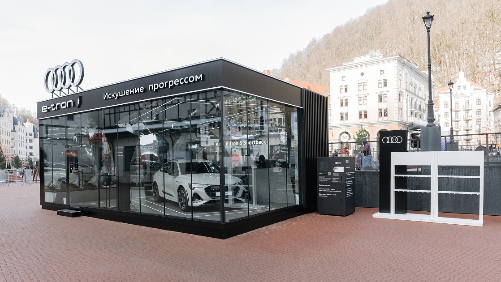

КарелМоторс
Отличный сервис, праздничная выдача, грамотный подбор авто
Яркая харизма и невероятная динамика: прогрессивные новинки семейства Audi RS - Audi RS 3 Sedan и Audi RS 3 Sportback
• Характер определяет восприятие: легендарный двигатель, прогрессивные технологии и уникальная эргономика; • Выдающиеся спортивные характеристики: высокопроизводительная силовая установка 2,5 TFSI мощностью 400 л. с., полный привод quattro, межколесный дифференциал RS, специальные режимы движения RS; • Дизайн под стать динамике: решетка радиатора Singleframe с сотовой структурой, большие воздухозаборники, задний спойлер, спортивная выхлопная система, накладки на пороги и многое другое в стиле RS; • Новые Audi RS 3 Sedan и Audi RS 3 Sportback доступны для заказа по цене от 5 800 000 рублей. |
.jpg)
Кен Блок оценил прогрессивный Audi RS Q e-tron
• Американский мастер дрифта проехался на автомобиле Маттиаса Экстрёма, созданного для ралли «Дакар»; • Исторические автомобили подразделения Audi Tradition на гонке GP Ice Race; • Кен Блок: «Феноменальные ощущения». |
Искушение прогрессом: инновационный эко-павильон Audi в Красной Поляне • Эко-пространство Audi «Искушение прогрессом» в Красной Поляне – марка с четырьмя кольцами демонстрирует свою приверженность устойчивому развитию на примере Audi e-tron S Sportback; • Уникальный эко-павильон в самом центре горнолыжного курорта, где каждый может внести свой вклад в защиту окружающей среды: фандомат для сбора бутылок для дальнейшей переработки и диджитал-интерактив «Узнай свой эко-след»; • Инновационный павильон построен из экологически безопасных материалов, которые будут отправлены на переработку после завершения работы эко-пространства; • Павильон Audi на площади Мзымта в Красной поляне открыт ежедневно до 10 апреля 2022 года с 10:00 до 19:00. |